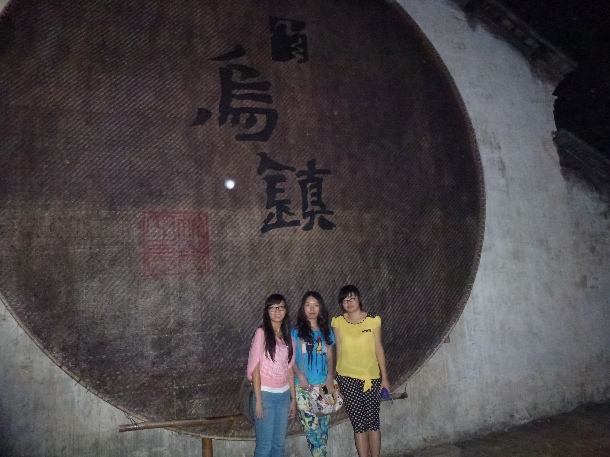
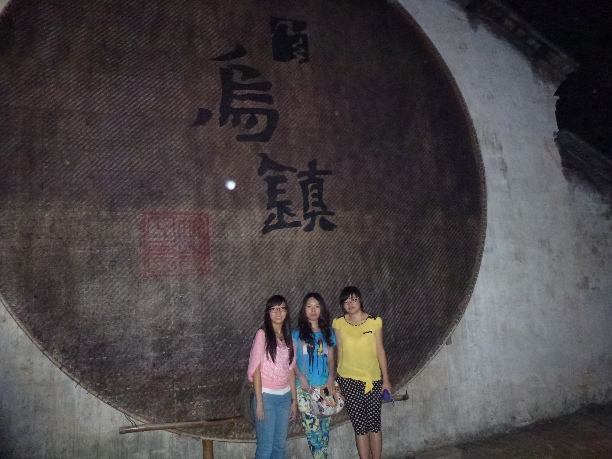

春来，几树繁华
色光妍暖，日气加浓。
脱掉臃肿的模样，佩戴湖底蓝的蕾丝卡。原来一群一群的姑娘们不再显得清纯，而是阳光。这里，我无法筹备十八岁的文字和心境。
离开得，唯有放下。二十一场春天，我在候着。
满校园的纸鸢，在牵线人的手中翩跹。起起伏伏，灵活的犹如鹰初飞时的抖动。操场上漾着清浅的喜悦，每个人心头似乎都怀揣着一个属于特定季节的梦。自我的，年轻的，敷着气息的小秘密。 踏青。旅行。应是这个季节的代名词。路过了寂寥，蛮荒的冬天，忍了平静，无汹涌的日子。回头时，你笑了笑，暗哑岁月的是自己。值得原谅的是懂得随季节上路，年轻的心，不应滞在石矶上，遍布青苔。 毕淑敏曾把旅行的要紧物件定为三种：一是时间。二是放下忧愁。三是活在身体的此时此刻。当然，前提是带上灵魂。如若缺少，便是浅浮的游玩，配着粗糙的本色，在时间晃荡，骨子里升华的价值永远逃窜不到意识里去。 或许有时候连同自己也无法认清旅行会给一个人产生的价值观念和对世间的辨认态度。琢磨和踟蹰只会毛化一颗心的激情。记得一位编辑庞洁提过远方就是永远到达不了的地方。所以旅行不需要目的，只盛装一颗向往的心，带上脚步，就会发现很多的美好不是在原地就能圈出的。 比如佛罗里达州的天涯海角的落日。在比如东方云南的古老茶树王。
思想是可以超越的，但活脱脱的现实艺术还是需要磨蹭的相处。镌刻出岁月中漫不经心的那份隽永。
校园里无可比清华园的丽人。但它已迫不及待的在这个季节崭露头角，分享出它所能给人们带来的优越感。
朝霞退了。繁星生了。
东湖延绵的相对较长，堤岸边堆彻的石头往往坐集大量人群。特别是夕阳时分。暖意正好，情调温馨。我想，美景只归景，更多的是提供与人们意识里所洋溢的平和及那份幸福感。 夜雨霏铃。清明雨上。
打开窗，湿意横然。抓不住的感伤，四处蔓延，通向胫珞。忆着儿时属于这个气节的萧翟声，还有送走亲人的那条古巷子。寂寞的年代，在雨中。我幻想着自己的寿命。长大。 春来，几树繁花。
我望着自己，断掉声色犬马的时光。
我想，接下来。又是一段盛世年华。
脱掉臃肿的模样，佩戴湖底蓝的蕾丝卡。原来一群一群的姑娘们不再显得清纯，而是阳光。这里，我无法筹备十八岁的文字和心境。
离开得，唯有放下。二十一场春天，我在候着。
满校园的纸鸢，在牵线人的手中翩跹。起起伏伏，灵活的犹如鹰初飞时的抖动。操场上漾着清浅的喜悦，每个人心头似乎都怀揣着一个属于特定季节的梦。自我的，年轻的，敷着气息的小秘密。 踏青。旅行。应是这个季节的代名词。路过了寂寥，蛮荒的冬天，忍了平静，无汹涌的日子。回头时，你笑了笑，暗哑岁月的是自己。值得原谅的是懂得随季节上路，年轻的心，不应滞在石矶上，遍布青苔。 毕淑敏曾把旅行的要紧物件定为三种：一是时间。二是放下忧愁。三是活在身体的此时此刻。当然，前提是带上灵魂。如若缺少，便是浅浮的游玩，配着粗糙的本色，在时间晃荡，骨子里升华的价值永远逃窜不到意识里去。 或许有时候连同自己也无法认清旅行会给一个人产生的价值观念和对世间的辨认态度。琢磨和踟蹰只会毛化一颗心的激情。记得一位编辑庞洁提过远方就是永远到达不了的地方。所以旅行不需要目的，只盛装一颗向往的心，带上脚步，就会发现很多的美好不是在原地就能圈出的。 比如佛罗里达州的天涯海角的落日。在比如东方云南的古老茶树王。
思想是可以超越的，但活脱脱的现实艺术还是需要磨蹭的相处。镌刻出岁月中漫不经心的那份隽永。
校园里无可比清华园的丽人。但它已迫不及待的在这个季节崭露头角，分享出它所能给人们带来的优越感。
朝霞退了。繁星生了。
东湖延绵的相对较长，堤岸边堆彻的石头往往坐集大量人群。特别是夕阳时分。暖意正好，情调温馨。我想，美景只归景，更多的是提供与人们意识里所洋溢的平和及那份幸福感。 夜雨霏铃。清明雨上。
打开窗，湿意横然。抓不住的感伤，四处蔓延，通向胫珞。忆着儿时属于这个气节的萧翟声，还有送走亲人的那条古巷子。寂寞的年代，在雨中。我幻想着自己的寿命。长大。 春来，几树繁花。
我望着自己，断掉声色犬马的时光。
我想，接下来。又是一段盛世年华。
在自己的城市旅行
人生如同围城，城外的人想进去，城里的人想出来。而每一座城市，又像一个人，
有自己的相貌、脾气、经历……不管你是“土著”还是过客，它容纳着你，烙印着你的过去、现在、甚至未来。
而我们，也该将它们记录下来，也是记录自己的人生，此为——城记。
“南楚雄边百粤亲，山川无异土风淳，踏歌樵妇黄茅髻，负载征人百葛巾”明代吴童的这首诗便是对这座城市的最好诠释， 曾听闻过“山水甲桂林”的丹霞地貌崀山，也曾暗羡过八十里南山的江南草原风光，更陶醉过亭台楼阁中流出的竹轩书香味， 慨叹过月移塔影中独有的江南神韵……这是怎样一座城市，承载着生命的摇篮。 我想，城市，始终是一个符号，关于城市的最终回归应在于人们对它的归属感。
来到邵阳这座城市快一年了，试着用我的双脚在这片土地上一寸一寸的丈量过，试着用我的双眸在这座城市里一次一次的寻觅过， 只是想在这座城市中搜寻某一瞬。曾也想亲近它，看每条小巷铭记历史的烟尘；听石板的哒哒雨声和着余烟串联天空与大地的豪迈歌声； 轻踏每一条街道刻铭路过的余痕；看来往车辆与飘零落叶的双人舞； 叹每一弧小桥诉说历史的变迁，还有那流水潺潺而过的喜悦构筑滚滚东逝的余波，没有多大的奢侈，只是想轻轻走过，感受每一瞬带来的喜悦。
埋怨过，因为它变幻无常的天气，带着南方特有的发酵味；逃避过，因为对理想之路布满的荆棘望而却步，夹杂着遥远而陌生的铜臭味； 讨厌过，因为故乡的泥土再一次芳香渐逝，没有少时的那份激情，唯有和着隔阂重重的喁喁前行； 也许，有时我也爱过，只是源于与它某一刻的投缘。
我走过，这座城市的高山，也曾看过山下人来人往，看高山隔断行云流水，隔断左岸都市的熙熙攘攘与右岸乡野的闲云野鹤， 很享受坐在山沿仿佛伸手便能摸到蓝天温度的感觉，看着来回的列车驮走凡尘余烟，驮走这座城市的点点气味， 有时便会觉得这世界就在我的脚下。
生活如此匆忙，像停滞的画卷，甚至来不及停下脚步真实的感受一次大地的温度，呼吸一次泥土的芬芳，眺望一次远方的山峦。 我曾渴望，当有一天，走在这座陌生而又有点熟悉的城市，能够站在小船上，体会一次小舟从此逝，江海寄余生的烟雨平生； 渴望站在小桥流水上，做装饰别人的窗；渴望每一隅角落，每一抹斜阳折射出的孤鹜晚霞。当然，这只是奢望， 城市永远在以它自己的脚步不断向前，就像滚滚而逝的江水一去不复返。城市，让更多的人模糊了故乡的概念， 就算乡愁的达达马蹄声响遍华夏大地，最终还是得终结于我不是归人，只是过客。越来越多的乡村青年拼命的往城里挤， 而原本城市里的城市人面对社会来的各种压力，想逃离原本就没有归属感的地方，当问到家乡这个词时，多少人已找不到自己的位置， 城市，成了一个没有归宿的代名词。
在这座城市里穿梭，几多等待几多愁，真正走进这座城市，窥探历史赋予它的沧桑感，仰望它淋漓雨上的屋檐， 抚摸它镌刻在木门上的刮痕，至少，它残留在记忆中的是诚恳的温度，一座座城市，一行行私语，一首首诗， 于人于己，都是自由而抒怀的放逐，曾经一个旅者在火车上曾有过这样的随想，“时间、生命、青春，于你于我， 都是最好的风景，走到哪里，便赏到哪里。如果什么都没有，那就回归宿命的泥土，简单却怒放着追逐的梦想， ”行走在路上的人们，不曾遗忘城市的美好诗意，也许有一天，你走在这条路上累了，很想停下来歇歇， 或者这条路并非心之所属，有人会对你说，走吧，在路上寻找答案。那么，这时，就抛开一切，去路上寻找答案！
人生如同一阕长短句，无论是上半阙的铺叙，还是下半阙的叹息，每一个词每一个句子，都融在每一声平仄里，正如，我路过这座城市， 走过每一座城市，想在自己的城市旅行。
我想，我们都应该在自己的城市旅行……寻找清澈的灵魂，这不是命运，我只是独自坐在这座城市里，把自己拨慢了几分。
“南楚雄边百粤亲，山川无异土风淳，踏歌樵妇黄茅髻，负载征人百葛巾”明代吴童的这首诗便是对这座城市的最好诠释， 曾听闻过“山水甲桂林”的丹霞地貌崀山，也曾暗羡过八十里南山的江南草原风光，更陶醉过亭台楼阁中流出的竹轩书香味， 慨叹过月移塔影中独有的江南神韵……这是怎样一座城市，承载着生命的摇篮。 我想，城市，始终是一个符号，关于城市的最终回归应在于人们对它的归属感。
来到邵阳这座城市快一年了，试着用我的双脚在这片土地上一寸一寸的丈量过，试着用我的双眸在这座城市里一次一次的寻觅过， 只是想在这座城市中搜寻某一瞬。曾也想亲近它，看每条小巷铭记历史的烟尘；听石板的哒哒雨声和着余烟串联天空与大地的豪迈歌声； 轻踏每一条街道刻铭路过的余痕；看来往车辆与飘零落叶的双人舞； 叹每一弧小桥诉说历史的变迁，还有那流水潺潺而过的喜悦构筑滚滚东逝的余波，没有多大的奢侈，只是想轻轻走过，感受每一瞬带来的喜悦。
埋怨过，因为它变幻无常的天气，带着南方特有的发酵味；逃避过，因为对理想之路布满的荆棘望而却步，夹杂着遥远而陌生的铜臭味； 讨厌过，因为故乡的泥土再一次芳香渐逝，没有少时的那份激情，唯有和着隔阂重重的喁喁前行； 也许，有时我也爱过，只是源于与它某一刻的投缘。
我走过，这座城市的高山，也曾看过山下人来人往，看高山隔断行云流水，隔断左岸都市的熙熙攘攘与右岸乡野的闲云野鹤， 很享受坐在山沿仿佛伸手便能摸到蓝天温度的感觉，看着来回的列车驮走凡尘余烟，驮走这座城市的点点气味， 有时便会觉得这世界就在我的脚下。
生活如此匆忙，像停滞的画卷，甚至来不及停下脚步真实的感受一次大地的温度，呼吸一次泥土的芬芳，眺望一次远方的山峦。 我曾渴望，当有一天，走在这座陌生而又有点熟悉的城市，能够站在小船上，体会一次小舟从此逝，江海寄余生的烟雨平生； 渴望站在小桥流水上，做装饰别人的窗；渴望每一隅角落，每一抹斜阳折射出的孤鹜晚霞。当然，这只是奢望， 城市永远在以它自己的脚步不断向前，就像滚滚而逝的江水一去不复返。城市，让更多的人模糊了故乡的概念， 就算乡愁的达达马蹄声响遍华夏大地，最终还是得终结于我不是归人，只是过客。越来越多的乡村青年拼命的往城里挤， 而原本城市里的城市人面对社会来的各种压力，想逃离原本就没有归属感的地方，当问到家乡这个词时，多少人已找不到自己的位置， 城市，成了一个没有归宿的代名词。
在这座城市里穿梭，几多等待几多愁，真正走进这座城市，窥探历史赋予它的沧桑感，仰望它淋漓雨上的屋檐， 抚摸它镌刻在木门上的刮痕，至少，它残留在记忆中的是诚恳的温度，一座座城市，一行行私语，一首首诗， 于人于己，都是自由而抒怀的放逐，曾经一个旅者在火车上曾有过这样的随想，“时间、生命、青春，于你于我， 都是最好的风景，走到哪里，便赏到哪里。如果什么都没有，那就回归宿命的泥土，简单却怒放着追逐的梦想， ”行走在路上的人们，不曾遗忘城市的美好诗意，也许有一天，你走在这条路上累了，很想停下来歇歇， 或者这条路并非心之所属，有人会对你说，走吧，在路上寻找答案。那么，这时，就抛开一切，去路上寻找答案！
人生如同一阕长短句，无论是上半阙的铺叙，还是下半阙的叹息，每一个词每一个句子，都融在每一声平仄里，正如，我路过这座城市， 走过每一座城市，想在自己的城市旅行。
我想，我们都应该在自己的城市旅行……寻找清澈的灵魂，这不是命运，我只是独自坐在这座城市里，把自己拨慢了几分。